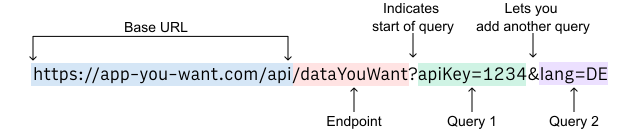

Application Programming Interface (API)#
This document introduces the use of API to access and query data. We focus on data access with APIs in this document.
What is an API?#
Broadly speaking, an API is a set of rules and procedures that facilitate interactions between computers and their applications.
A very common type of API is the Web API, which, among other things, allows users to query a remote database over the internet.
An API specifies how a user or application accesses the data.
Examples:
Twitter: tweets, users, replies, etc.
Art Institute of Chicago: artworks, exhibits, ticketing, etc.
New York Times archive: articles, headlines, book reviews, etc.
Representational State Transfer (REST)#
RESTful
APIs are convenient for querying databases by URLs.
requests are self-contained, meaning that they do not rely on previous requests.
responses can be cached to improve server response time.
General methods:
GET: access resources located at a URL
POST: send data to the server
PUT: update existing resources
DELETE: delete resources in a server
Request via a URL#
 |
|---|
Anatomy of a URL request (rows.com) |
Example: Art Institute of Chicago API#
The Art Institute of Chicago hosts a JSON-response API. The preferrable way of using an API is to refer to its documentation, e.g. https://api.artic.edu/docs/.
Important for any API usage (Terms and conditions):
Check rate limits
Check authentication methods
import requests # requests.readthedocs.io/
import pandas as pd
First request#
url_artist = 'https://api.artic.edu/api/v1/artists'
r = requests.get(url_artist)
artists = r.json()
artists['pagination']
{'total': 14105,
'limit': 12,
'offset': 0,
'total_pages': 1176,
'current_page': 1,
'next_url': 'https://api.artic.edu/api/v1/artists?page=2'}
Note: We only retrieve 12 records from a total of > 10000 records.
Request with parameters#
r100 = requests.get(url_artist, params={'limit': 100, 'page':2})
artists_100 = r100.json()
artist_data = artists_100['data']
df = pd.DataFrame(artist_data)
df
| id | api_model | api_link | title | sort_title | alt_titles | is_artist | birth_date | death_date | description | ulan_id | suggest_autocomplete_all | source_updated_at | updated_at | timestamp | suggest_autocomplete_boosted | |
|---|---|---|---|---|---|---|---|---|---|---|---|---|---|---|---|---|
| 0 | 76531 | agents | https://api.artic.edu/api/v1/agents/76531 | Carlo Ernesto Liverati | Liverati, Carlo Ernesto | [C. E. Liveratif, C. E. Liverati] | True | 1805.0 | 1844.0 | None | None | {'input': ['Carlo Ernesto Liverati', 'Liverati... | 2025-01-28T18:05:32-06:00 | 2025-01-28T18:10:22-06:00 | 2025-02-18T10:13:14-06:00 | NaN |
| 1 | 74323 | agents | https://api.artic.edu/api/v1/agents/74323 | Nicolas Bazin | Bazin, Nicolas | None | True | NaN | NaN | None | None | {'input': ['Nicolas Bazin', 'Bazin, Nicolas'],... | 2025-01-28T18:05:32-06:00 | 2025-01-28T18:10:22-06:00 | 2025-02-18T10:13:14-06:00 | NaN |
| 2 | 74315 | agents | https://api.artic.edu/api/v1/agents/74315 | Johann Jakob Gräsman | Gräsman, Johann Jakob | [Johann Jakob Kresman, Johann Jacob Graessmann] | True | 1726.0 | 1759.0 | None | None | {'input': ['Johann Jakob Gräsman', 'Gräsman, J... | 2025-01-28T18:05:32-06:00 | 2025-01-28T18:10:22-06:00 | 2025-02-18T10:13:14-06:00 | NaN |
| 3 | 70737 | agents | https://api.artic.edu/api/v1/agents/70737 | Johann Baptist Klauber | Klauber, Johann Baptist | [Johann B. Klauber] | True | 1712.0 | 1787.0 | None | None | {'input': ['Johann Baptist Klauber', 'Klauber,... | 2025-01-28T18:05:32-06:00 | 2025-01-28T18:10:22-06:00 | 2025-02-18T10:13:14-06:00 | NaN |
| 4 | 69511 | agents | https://api.artic.edu/api/v1/agents/69511 | Alfred Jones | Jones, Alfred | None | True | 1819.0 | 1900.0 | None | None | {'input': ['Alfred Jones', 'Jones, Alfred'], '... | 2025-01-28T18:05:32-06:00 | 2025-01-28T18:10:22-06:00 | 2025-02-18T10:13:14-06:00 | NaN |
| ... | ... | ... | ... | ... | ... | ... | ... | ... | ... | ... | ... | ... | ... | ... | ... | ... |
| 95 | 48830 | agents | https://api.artic.edu/api/v1/agents/48830 | Gioacchino Assereto | Assereto, Gioacchino | [Giovacchino Asserto, Giovacchino Axareto, Gio... | True | 1600.0 | 1649.0 | None | None | {'input': ['Gioacchino Assereto', 'Assereto, G... | 2025-01-13T09:14:56-06:00 | 2025-01-13T09:16:21-06:00 | 2025-02-18T10:13:14-06:00 | NaN |
| 96 | 42473 | agents | https://api.artic.edu/api/v1/agents/42473 | Valentin Lefebvre | Lefebvre, Valentin | [Valentin Lefevre, Valentin LeFebre, Valentin ... | True | 1641.0 | 1680.0 | None | None | {'input': ['Valentin Lefebvre', 'Lefebvre, Val... | 2025-01-13T09:14:56-06:00 | 2025-01-13T09:16:21-06:00 | 2025-02-18T10:13:14-06:00 | NaN |
| 97 | 41841 | agents | https://api.artic.edu/api/v1/agents/41841 | Carlo Innocenzo Carlone | Carlone, Carlo Innocenzo | [Carlo Carlone, Carlo Carlone, (Innocenz?), Ca... | True | 1686.0 | 1775.0 | None | None | {'input': ['Carlo Innocenzo Carlone', 'Carlone... | 2025-01-13T09:14:56-06:00 | 2025-01-13T09:16:21-06:00 | 2025-02-18T10:13:14-06:00 | NaN |
| 98 | 30441 | agents | https://api.artic.edu/api/v1/agents/30441 | Marco Angolo del Moro | Angolo del Moro, Marco | [Marco Angelo del Moro, Marco del Moro, Marco ... | True | NaN | NaN | None | None | {'input': ['Marco Angolo del Moro', 'Angolo de... | 2025-01-13T09:14:56-06:00 | 2025-01-13T09:16:21-06:00 | 2025-02-18T10:13:14-06:00 | NaN |
| 99 | 8516 | agents | https://api.artic.edu/api/v1/agents/8516 | Giovanni Battista Fontana | Fontana, Giovanni Battista | None | True | 1524.0 | 1587.0 | None | None | {'input': ['Giovanni Battista Fontana', 'Fonta... | 2025-01-13T09:14:56-06:00 | 2025-01-13T09:16:21-06:00 | 2025-02-18T10:13:14-06:00 | NaN |
100 rows × 16 columns
A considerable way to retrieve multiple pages of data#
Check how much data there are.
Use a for loop with
time.sleep().
*Note: Even though we can “scrape” through the entire database, we typically should not. See for example, discussion in Data dump vs API.
Search query#
Simply having access or a copy of the data is not inheritly useful. Most APIs allow for either filtering or searching.
url_artist_search = url_artist + '/search'
Practice - ARTIC API#
Several endpoints for this API include artists, exhibits, artworks, etc. Refer to https://api.artic.edu/docs/#endpoints.
How many artworks are in the Art Institute collection?
Find the exhibits that has “Van Gogh” in the title.
Search for a painting called “A Sunday on La Grande Jatte”. Who is the artist? When was it painted?
url_artwork = 'https://api.artic.edu/api/v1/artworks'
r = requests.get(url_artwork)
url_exhibit = 'https://api.artic.edu/api/v1/exhibitions/search?q=van gogh'
r = requests.get(url_exhibit, params = {'limit': 40})
df_vangogh = pd.DataFrame(r.json()['data'])
df_vangogh
| _score | id | api_model | api_link | title | timestamp | |
|---|---|---|---|---|---|---|
| 0 | 430.481200 | 3070 | exhibitions | https://api.artic.edu/api/v1/exhibitions/3070 | Van Gogh | 2025-02-17T23:38:33-06:00 |
| 1 | 409.763700 | 1865 | exhibitions | https://api.artic.edu/api/v1/exhibitions/1865 | Van Gogh's Bedrooms | 2025-02-17T23:35:01-06:00 |
| 2 | 409.057070 | 3672 | exhibitions | https://api.artic.edu/api/v1/exhibitions/3672 | Vincent van Gogh | 2025-02-05T17:25:07-06:00 |
| 3 | 390.981630 | 2518 | exhibitions | https://api.artic.edu/api/v1/exhibitions/2518 | Van Gogh: In Search Of | 2025-02-17T23:37:52-06:00 |
| 4 | 343.150940 | 3390 | exhibitions | https://api.artic.edu/api/v1/exhibitions/3390 | Gallery of Art Interpretation: Van Gogh, Artist | 2025-02-05T17:25:04-06:00 |
| 5 | 331.616820 | 2835 | exhibitions | https://api.artic.edu/api/v1/exhibitions/2835 | Van Gogh and Gauguin: The Studio of the South | 2025-02-17T23:37:47-06:00 |
| 6 | 330.616820 | 9639 | exhibitions | https://api.artic.edu/api/v1/exhibitions/9639 | Van Gogh and the Avant-Garde: The Modern Lands... | 2025-02-17T23:34:40-06:00 |
| 7 | 329.910160 | 7177 | exhibitions | https://api.artic.edu/api/v1/exhibitions/7177 | Leonardo to Van Gogh: Master Drawings from Bud... | 2025-02-05T17:25:48-06:00 |
| 8 | 295.761700 | 8423 | exhibitions | https://api.artic.edu/api/v1/exhibitions/8423 | Meet the Artists: Van Gogh and Gauguin: A Self... | 2025-02-05T17:26:05-06:00 |
| 9 | 294.761700 | 5874 | exhibitions | https://api.artic.edu/api/v1/exhibitions/5874 | Masterpiece of the Month: The Bedroom at Arles... | 2025-02-05T17:25:30-06:00 |
| 10 | 284.920650 | 3389 | exhibitions | https://api.artic.edu/api/v1/exhibitions/3389 | Masterpiece of the Month: Garden of the House ... | 2025-02-05T17:25:04-06:00 |
| 11 | 260.023830 | 5757 | exhibitions | https://api.artic.edu/api/v1/exhibitions/5757 | Paintings and Drawings by Vincent van Gogh, le... | 2025-02-05T17:25:29-06:00 |
| 12 | 252.419620 | 7780 | exhibitions | https://api.artic.edu/api/v1/exhibitions/7780 | Junior Museum: Portraits and Sunflowers of Vin... | 2025-02-05T17:25:54-06:00 |
| 13 | 245.254710 | 8424 | exhibitions | https://api.artic.edu/api/v1/exhibitions/8424 | The Yellow House: Van Gogh and Gaugiun Side by... | 2025-02-05T17:26:05-06:00 |
| 14 | 23.248981 | 5439 | exhibitions | https://api.artic.edu/api/v1/exhibitions/5439 | Etchings by Van Dyck | 2025-02-05T17:25:26-06:00 |
| 15 | 23.202024 | 5658 | exhibitions | https://api.artic.edu/api/v1/exhibitions/5658 | The Howard Van Doren Shaw Memorial | 2025-02-17T23:33:23-06:00 |
| 16 | 23.202024 | 5912 | exhibitions | https://api.artic.edu/api/v1/exhibitions/5912 | Architecture by Mies van der Rohe | 2025-02-17T23:33:14-06:00 |
| 17 | 22.332485 | 6027 | exhibitions | https://api.artic.edu/api/v1/exhibitions/6027 | Mies van der Rohe Retrospective | 2025-02-05T17:25:32-06:00 |
| 18 | 22.332485 | 74 | exhibitions | https://api.artic.edu/api/v1/exhibitions/74 | The Iconography of Van Dyck | 2025-02-05T17:24:31-06:00 |
| 19 | 22.202024 | 2281 | exhibitions | https://api.artic.edu/api/v1/exhibitions/2281 | Van Dyck, Rembrandt, and the Portrait Print | 2025-02-17T23:38:25-06:00 |
| 20 | 21.495365 | 3615 | exhibitions | https://api.artic.edu/api/v1/exhibitions/3615 | Works by Jean Emile van Cauwelaert | 2025-02-05T17:25:07-06:00 |
| 21 | 21.495365 | 3903 | exhibitions | https://api.artic.edu/api/v1/exhibitions/3903 | Photographs by Edouard van der Elsken | 2025-02-05T17:25:09-06:00 |
| 22 | 21.495365 | 6535 | exhibitions | https://api.artic.edu/api/v1/exhibitions/6535 | Lucas van Leyden, Engravings and Woodcuts | 2025-02-05T17:25:38-06:00 |
| 23 | 21.473270 | 5410 | exhibitions | https://api.artic.edu/api/v1/exhibitions/5410 | Prints by Martin Schongauer, Lucas van Leyden,... | 2025-02-05T17:25:25-06:00 |
| 24 | 20.727734 | 8242 | exhibitions | https://api.artic.edu/api/v1/exhibitions/8242 | On the Road to Italy: Jan van Scorel | 2025-02-05T17:26:02-06:00 |
| 25 | 19.368977 | 7095 | exhibitions | https://api.artic.edu/api/v1/exhibitions/7095 | Society for Contemporary Art 39th Annual: Ger ... | 2025-02-05T17:25:46-06:00 |
| 26 | 19.368977 | 8218 | exhibitions | https://api.artic.edu/api/v1/exhibitions/8218 | Van Eyck's “Annunciation”: The meeting of Heav... | 2025-02-05T17:26:01-06:00 |
| 27 | 18.764820 | 3449 | exhibitions | https://api.artic.edu/api/v1/exhibitions/3449 | Water Colors, Sketches, Drawings and Etchings ... | 2025-02-05T17:25:05-06:00 |
| 28 | 18.203678 | 7457 | exhibitions | https://api.artic.edu/api/v1/exhibitions/7457 | The Unknown Mies van der Rohe and His Disciple... | 2025-02-05T17:25:50-06:00 |
| 29 | 17.764820 | 4468 | exhibitions | https://api.artic.edu/api/v1/exhibitions/4468 | Views in the Canadian Rockies Photographed by ... | 2025-02-05T17:25:15-06:00 |
| 30 | 17.681107 | 3037 | exhibitions | https://api.artic.edu/api/v1/exhibitions/3037 | Architecture, English and American 18th Centur... | 2025-02-05T17:24:59-06:00 |
| 31 | 17.203678 | 5896 | exhibitions | https://api.artic.edu/api/v1/exhibitions/5896 | Masterpiece of the Month: The Adoration of the... | 2025-02-05T17:25:31-06:00 |
| 32 | 17.193268 | 8577 | exhibitions | https://api.artic.edu/api/v1/exhibitions/8577 | Room of Chicago Art: Paintings by Jean Crawfor... | 2025-02-05T17:26:07-06:00 |
| 33 | 16.681107 | 2924 | exhibitions | https://api.artic.edu/api/v1/exhibitions/2924 | Small Loan Collection including Paintings by K... | 2025-02-05T17:24:54-06:00 |
| 34 | 16.234737 | 3095 | exhibitions | https://api.artic.edu/api/v1/exhibitions/3095 | To Build a Modern Campus: Ludwig Mies van der ... | 2025-02-17T23:38:24-06:00 |
| 35 | 15.906640 | 6296 | exhibitions | https://api.artic.edu/api/v1/exhibitions/6296 | The Masterpiece of the Month: Christ Preaching... | 2025-02-05T17:25:35-06:00 |
| 36 | 14.833890 | 5593 | exhibitions | https://api.artic.edu/api/v1/exhibitions/5593 | Paintings by Tressa Emerson Benson, Fred Biese... | 2025-02-05T17:25:28-06:00 |
| 37 | 14.833890 | 2102 | exhibitions | https://api.artic.edu/api/v1/exhibitions/2102 | Paintings by Jean Crawford Adams, Emil Armin, ... | 2025-02-05T17:24:46-06:00 |
Example with New York Times API#
The New York Times API uses an API key to authenticate users. The FAQs page has some good information about the usage of these APIs. You may request a NYT API key using the instructions listed in https://developer.nytimes.com/get-started.
Brief word about the use of an API key#
An API key is a unique generated string that
identifies a particular application (or project),
authenticates and grants access to a user,
provides guardrails to controlling API usage traffic, and
enables resource management over the flow of data.
Best practices in using an API key#
Do not hardcode your API key into any scripts.
For example, save your API key in a local file (or environment variables) and access it from your code.
Do not upload your API key anywhere publicly accessible.
Rotate API keys.
Revoke access after the lifespan of a project.
import requests
import pandas as pd
with open('../data/nyt_api.key', 'r') as f:
apikey = f.readlines()[0]
# formatted string example
url = 'https://api.nytimes.com/svc/search/v2/articlesearch.json?&api-key={:s}'.format(apikey)
url = f'https://api.nytimes.com/svc/search/v2/articlesearch.json?&api-key={apikey}'
Search articles#
Example API: https://developer.nytimes.com/docs/articlesearch-product/1/routes/articlesearch.json/get
import time
results_store = []
for i in range(5):
if r.ok:
result = r.json()
results_store.append(result['response']['docs'])
else:
print('something went wrong!')
time.sleep(12)
len(results_store[0])
10
r = requests.get(url, params={'q':'microsoft',
'begin_date': '20240101',
'end_date': '20241231',
'sort': 'oldest'})
result = r.json()
result['response']['docs'][0]['pub_date']
'2024-01-02T20:43:17+0000'
import time
time.sleep(12)
result['response']['docs'][0]
{'abstract': 'Leonard Bernstein is coming back to New York City Center as part of a celebration of what would have been his 90th birthday.',
'web_url': 'https://www.nytimes.com/2008/05/12/theater/12arts-ENCORESFORBE_BRF.html',
'snippet': 'Leonard Bernstein is coming back to New York City Center as part of a celebration of what would have been his 90th birthday.',
'lead_paragraph': 'Leonard Bernstein is coming back to New York City Center as part of a celebration of what would have been his 90th birthday. For the first time, the City Center Encores! series will begin in the fall, with “On the Town,” the 1944 musical that Bernstein wrote with Betty Comden and Adolph Green. “On the Town” is scheduled to run from Nov. 19 to 23, followed by a production of the 1932 Jerome Kern-Oscar Hammerstein musical “Music in the Air” from Feb. 5 to 8. The season will conclude with “Finian’s Rainbow,” the 1949 musical by Burton Lane, E. Y. Harburg and Fred Saidy about what to do with an Irish pot of gold in the state of Missitucky. That is scheduled to run March 26 to 29.',
'print_section': 'E',
'print_page': '2',
'source': 'The New York Times',
'multimedia': [],
'headline': {'main': 'Encores! for Bernstein',
'kicker': 'Arts, Briefly',
'content_kicker': None,
'print_headline': 'Encores! For Bernstein',
'name': None,
'seo': None,
'sub': None},
'keywords': [{'name': 'subject',
'value': 'Encores! Great American Musicals in Concert (Series)',
'rank': 1,
'major': 'N'},
{'name': 'subject', 'value': 'Theater', 'rank': 2, 'major': 'N'},
{'name': 'persons', 'value': 'Bernstein, Leonard', 'rank': 3, 'major': 'N'}],
'pub_date': '2008-05-12T04:00:00+0000',
'document_type': 'article',
'news_desk': 'Culture',
'section_name': 'Theater',
'byline': {'original': 'By Campbell Robertson',
'person': [{'firstname': 'Campbell',
'middlename': None,
'lastname': 'Robertson',
'qualifier': None,
'title': None,
'role': 'reported',
'organization': '',
'rank': 1}],
'organization': None},
'type_of_material': 'Brief',
'_id': 'nyt://article/cff39034-1dd5-57f0-bfb6-5ca21ac5cbe7',
'word_count': 131,
'uri': 'nyt://article/cff39034-1dd5-57f0-bfb6-5ca21ac5cbe7'}
df = pd.DataFrame(result['response']['docs'])
df
| abstract | web_url | snippet | lead_paragraph | source | multimedia | headline | keywords | pub_date | document_type | news_desk | section_name | byline | type_of_material | _id | word_count | uri | print_section | print_page | |
|---|---|---|---|---|---|---|---|---|---|---|---|---|---|---|---|---|---|---|---|
| 0 | And a winter storm could dump up to a foot of ... | https://www.nytimes.com/2025/02/18/weather/arc... | And a winter storm could dump up to a foot of ... | A powerful surge of arctic air from Canada des... | The New York Times | [{'rank': 0, 'subtype': 'square320', 'caption'... | {'main': 'Arctic Air Mass Brings Dangerous Tem... | [{'name': 'subject', 'value': 'Weather', 'rank... | 2025-02-18T14:48:32+0000 | article | Weather | Weather | {'original': 'By Nazaneen Ghaffar', 'person': ... | News | nyt://article/3f7121fc-64f3-577b-9b05-edff9459... | 993 | nyt://article/3f7121fc-64f3-577b-9b05-edff9459... | NaN | NaN |
| 1 | Widespread ice accumulations may lead to hazar... | https://www.nytimes.com/2025/02/05/weather/ice... | Widespread ice accumulations may lead to hazar... | Waves of winter weather are expected to sweep ... | The New York Times | [{'rank': 0, 'subtype': 'xlarge', 'caption': N... | {'main': 'Freezing Rain and Messy Travel Expec... | [{'name': 'subject', 'value': 'Weather', 'rank... | 2025-02-05T09:00:03+0000 | article | Weather | Weather | {'original': 'By Nazaneen Ghaffar and Judson J... | News | nyt://article/5cee321e-3b73-5b57-aee5-585928ee... | 534 | nyt://article/5cee321e-3b73-5b57-aee5-585928ee... | NaN | NaN |
| 2 | Their feathers, roosting behaviors and adaptab... | https://www.nytimes.com/2025/01/29/realestate/... | Their feathers, roosting behaviors and adaptab... | Winter mornings begin at David Sibley’s Deerfi... | The New York Times | [{'rank': 0, 'subtype': 'xlarge', 'caption': N... | {'main': 'The Birds’ Guide to Surviving Winter... | [{'name': 'subject', 'value': 'Birds', 'rank':... | 2025-01-29T10:00:23+0000 | article | RealEstate | Real Estate | {'original': 'By Margaret Roach', 'person': [{... | News | nyt://article/e28cb759-1673-58d8-9c55-4568539f... | 1466 | nyt://article/e28cb759-1673-58d8-9c55-4568539f... | RE | 9 |
| 3 | The 17-member crew of the freighter, stuck a m... | https://www.nytimes.com/2025/01/25/nyregion/ca... | The 17-member crew of the freighter, stuck a m... | A Canadian cargo freighter carrying 17 crew me... | The New York Times | [{'rank': 0, 'subtype': 'xlarge', 'caption': N... | {'main': 'After 3 Days Trapped in Lake Erie Ic... | [{'name': 'glocations', 'value': 'Lake Erie', ... | 2025-01-25T21:35:10+0000 | article | Metro | New York | {'original': 'By David Andreatta', 'person': [... | News | nyt://article/8c8f3d31-ab16-59d7-899c-5a9ce713... | 756 | nyt://article/8c8f3d31-ab16-59d7-899c-5a9ce713... | NaN | NaN |
| 4 | A mass of air called the polar vortex has esca... | https://www.nytimes.com/2025/01/21/climate/why... | A mass of air called the polar vortex has esca... | The unusual gust of frigid air extending down ... | The New York Times | [] | {'main': 'Why Is It So Cold in the South If th... | [{'name': 'subject', 'value': 'Global Warming'... | 2025-01-21T20:36:07+0000 | article | Climate | Climate | {'original': 'By Austyn Gaffney', 'person': [{... | News | nyt://article/68605806-3676-574a-9858-49ef7db6... | 477 | nyt://article/68605806-3676-574a-9858-49ef7db6... | NaN | NaN |
| 5 | Although the last remaining precipitation was ... | https://www.nytimes.com/2025/01/22/weather/sou... | Although the last remaining precipitation was ... | On Wednesday, a long stretch of the deep south... | The New York Times | [] | {'main': 'When Will the South Warm Up Again? N... | [{'name': 'subject', 'value': 'Weather', 'rank... | 2025-01-22T18:03:32+0000 | article | Weather | Weather | {'original': 'By Judson Jones', 'person': [{'f... | News | nyt://article/1eadb55b-5c5b-50b5-86c1-bca28b07... | 270 | nyt://article/1eadb55b-5c5b-50b5-86c1-bca28b07... | NaN | NaN |
| 6 | Officials warned residents across the South th... | https://www.nytimes.com/2025/01/23/us/snow-col... | Officials warned residents across the South th... | After a rare winter storm walloped the souther... | The New York Times | [{'rank': 0, 'subtype': 'xlarge', 'caption': N... | {'main': 'After Snow and Frigid Temperatures, ... | [{'name': 'glocations', 'value': 'Southern Sta... | 2025-01-23T10:02:15+0000 | article | National | U.S. | {'original': 'By Eduardo Medina', 'person': [{... | News | nyt://article/d1bb9b9c-ea8c-51c2-b90f-47f12e61... | 800 | nyt://article/d1bb9b9c-ea8c-51c2-b90f-47f12e61... | A | 11 |
| 7 | The figures are unofficial because National We... | https://www.nytimes.com/2025/01/22/weather/win... | The figures are unofficial because National We... | Amid an extraordinary storm that delivered a b... | The New York Times | [{'rank': 0, 'subtype': 'xlarge', 'caption': N... | {'main': 'Here’s Where It Snowed the Most Acro... | [{'name': 'subject', 'value': 'Snow and Snowst... | 2025-01-22T22:07:45+0000 | article | Weather | Weather | {'original': 'By Amy Graff', 'person': [{'firs... | News | nyt://article/ac7f1014-864e-5f87-aa4a-2cc3ede4... | 476 | nyt://article/ac7f1014-864e-5f87-aa4a-2cc3ede4... | NaN | NaN |
| 8 | Snow and cold temperatures hitting a broad swa... | https://www.nytimes.com/2025/01/21/weather/fli... | Snow and cold temperatures hitting a broad swa... | With winter weather striking the Southeastern ... | The New York Times | [{'rank': 0, 'subtype': 'xlarge', 'caption': N... | {'main': 'Thousands of Flights Delayed or Canc... | [{'name': 'subject', 'value': 'Delays (Transpo... | 2025-01-21T20:32:56+0000 | article | National | Weather | {'original': 'By Christine Chung', 'person': [... | News | nyt://article/76d480d7-59ba-5fde-94ca-283cde44... | 513 | nyt://article/76d480d7-59ba-5fde-94ca-283cde44... | NaN | NaN |
| 9 | Many roadways were impassable, classes were ca... | https://www.nytimes.com/2025/01/21/weather/new... | Many roadways were impassable, classes were ca... | Weather upending routines and causing havoc is... | The New York Times | [{'rank': 0, 'subtype': 'xlarge', 'caption': N... | {'main': 'New Orleans, a City That Has Seen It... | [{'name': 'subject', 'value': 'Snow and Snowst... | 2025-01-21T19:37:18+0000 | article | National | Weather | {'original': 'By Katy Reckdahl and Rick Rojas'... | News | nyt://article/733ed940-201e-5e84-ae2d-55445602... | 536 | nyt://article/733ed940-201e-5e84-ae2d-55445602... | NaN | NaN |
How many articles matched the search?#
How many articles did we get?#
How many articles are there for the last 10 years (2014 - 2024)?#
How many articles are there in each of the last 10 years?#
Get the first 50 articles#
Practice - MTFBWY#
Find out (if you don’t already know) the year when the first Star Wars movie came out.
Retrieve the number of hits per year since then for the following terms:
‘Carrie Fisher’
‘Harrison Ford’
‘Daisy Ridley’
‘Star Wars’
Add more if you wish…
Store the numbers into a dataframe.
Plot the number of hits against year on the same graph.